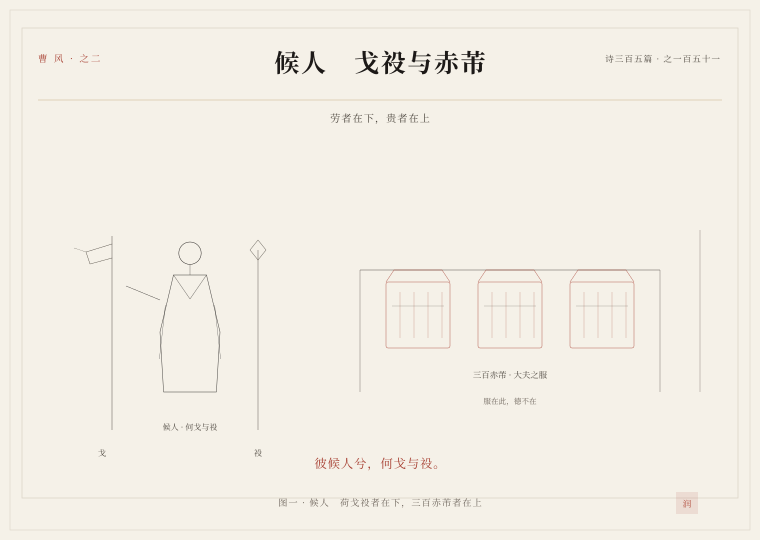
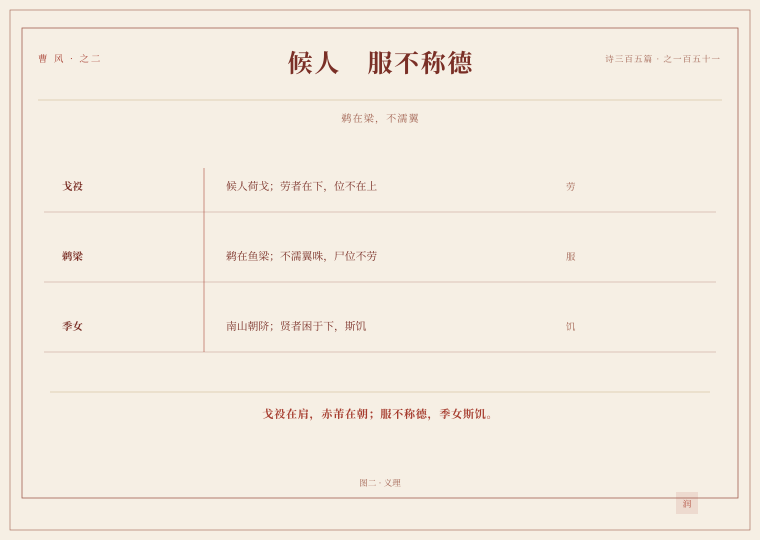

第一百五十一篇 候人
曹风 · 之二 SJ151
朗读 · 普通话
依经文原文朗读，章次不读出；配古琴底乐，不改速、不加拖腔。全库同一音色（豆包 TTS），非播音员录制。
一 解题
诗三判：
- 谁在说：曹国之人。见候人荷戈与祋、迎送宾客，而「彼其之子」三百赤芾、列于朝位；劳者在下，贵者在上，故以「不称其服」刺之。
- 说什么事：四章由候人之劳，转鹈在梁不濡翼、不濡咮，再转南山朝𬯀、季女斯饥。劳者无位，位者不劳；服者不称，饥者无告。
- 为何编在此：曹风第二篇。前篇刺奢，此篇刺「近小人」；奢在君身，失在用人，二篇相继，见曹政之坏。
《毛序》：「《候人》，刺近小人也。共公远君子而好近小人焉。」
朱子《诗集传》：「赋也。候人，道路迎送宾客之官。何，担也。戈、祋，兵器也。彼其之子，谓小人也。赤芾，大夫之服。三百，言其众多也。」二章：「鹈，水鸟，在梁不濡其翼，言不称其服也。」三章：「咮，喙也。媾，遇也。」四章：「荟蔚，草木众多貌。𬯀，升也。季女，少女也。」
本库的看法：《候人》是一首把「服不称德」写成两种人对照的诗。
毛序说「远君子而好近小人」，朱子说「不称其服」，二说一政一服，其实同指：荷戈者在下，赤芾者在上；服愈贵，德愈轻。
须辨：候人是迎送宾客之官，不是候望之人；何是担，不是「何」字之问；祋是兵器，不是祋杖；赤芾是大夫之服，不是红布；鹈在梁不濡翼，是喻尸位不劳，不是写鸟。末章「季女斯饥」，是贤者困于下，不是少女真的饿。
断语：戈祋在肩，赤芾在朝；服不称德，季女斯饥。
先辨五事：「候人」是迎送宾客之官，不是候望；「何」读荷，是担；「祋」是殳类兵器，不是祋杖；「赤芾」是大夫蔽膝，不是红布；「鹈」是水鸟，不是鹤。
二 经文
第一章
彼候人兮，何戈与祋。
彼其之子，三百赤芾。
第二章
维鹈在梁，不濡其翼。
彼其之子，不称其服。
第三章
维鹈在梁，不濡其咮。
彼其之子，不遂其媾。
第四章
荟兮蔚兮，南山朝𬯀。
婉兮娈兮，季女斯饥。
三 韵读
- 一章：祋、芾，月、物旁转。声短，如兵器相击。
- 二章：翼、服，职部相叶。入声收，声硬。
- 三章：咮、媾，侯部相叶。转侯，声厚。
- 四章：𬯀、饥，脂、微旁转。声细而哀。
读法：前三章皆短韵，末章转细；戈祋之声硬，季女之声软，一硬一软，正是上下之别。
四 字义与名物
- 候人：道路迎送宾客之官。何：担。戈、祋：兵器；祋，殳类。彼其之子：那些小人。赤芾：大夫之蔽膝，赤色。
- 鹈：水鸟。梁：鱼梁。濡：沾湿。翼：翅。不称其服：德不配其服。
- 咮：鸟喙。不遂其媾：不遂其遇，言不称其宠遇。
- 荟、蔚：草木众多貌。朝𬯀：早晨升云。婉、娈：年少美好貌。季女：少女，喻贤者。斯饥：困饿。
五 今译
一章：那候人啊，肩担戈与祋。那些小子，三百人皆赤芾。
二章：鹈站在鱼梁上，不沾湿翅膀。那些小子，不配穿那身官服。
三章：鹈站在鱼梁上，不沾湿鸟喙。那些小子，不称其所受的宠遇。
四章：草木荟蔚，南山早晨升云。婉兮娈兮的少女，却在这里受饥。
六 章旨
- 一章：候人荷戈祋，是「劳」；之子三百赤芾，是「贵」；一劳一贵，服已倒置。
- 二章：鹈在梁不濡翼，是「不劳而食」；不称其服，正刺其德不配位。
- 三章：鹈不濡咮，是「不劳而宠」；不遂其媾，正刺其宠不称功。
- 四章：南山朝𬯀，是「气升」；季女斯饥，是「贤困」；云升而人饥，天人之际倒置。
七 诗教
- 服以称德：赤芾是大夫之服，不是赏人之物；服不称德，则服为辱。
- 劳者在下：候人荷戈，正是国之所赖；赖其劳而贱其位，国必坏。
- 季女斯饥：贤者困于下，不是少女之饥；读成闺怨，则诗刺尽失。
八 分寸与边界
- 不把「候人」读成候望：候人是迎送之官；候望是另一官。
- 不把「三百赤芾」读成实数：三百言其众，不是三百人；读成实数，则诗之夸张失。
- 不把「鹈」读成鹤：鹈是水鸟，长喙、食鱼；认错鸟，则「不濡翼」之义失。
- 不把「季女」读成实指少女：季女喻贤者；读成少女，则「斯饥」无着。
九 存疑
- 诗旨：毛序「刺近小人」，朱子「不称其服」。本库从毛朱，以服不称德为骨。
- 「祋」：毛传「殳也」，朱子「兵器」。从殳类。
- 「不遂其媾」：一说媾为宠遇，一说媾为婚媾。从宠遇。
- 「季女」：一说少女，一说贤者。从贤者之喻。
十 跨典
- 《诗经·曹风·候人》与《魏风·伐檀》对读：彼刺「不稼不穑」，此刺「不称其服」；一在食，一在服。
- 《论语》「不患寡而患不均」；此篇「三百赤芾」与「季女斯饥」，正是均与不均。
- 《左传》曹共公之世，近小人、远君子；诗不指姓名，只画两排人。
十一 双卡与图
六对：
| 候人（迎送宾客之官） |
候人（候望之人） |
| 何（担） |
何（疑问） |
| 祋（殳类兵器） |
祋（祋杖） |
| 赤芾（大夫蔽膝） |
赤芾（红布） |
| 鹈（水鸟） |
鹈（鹤） |
| 季女（喻贤者） |
季女（实指少女） |

图一 · 候人 荷戈祋与三百赤芾

图二 · 候人 鹈在梁，服不称德